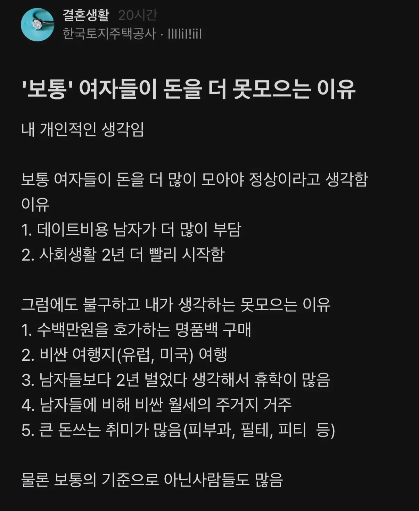

"보통" 여자들이 돈을 더 못모으는 이유
댓글
이젠 비율이 좀 비슷해지긴 했지만 아직까지도 남자라면 그래도 사회적으로 가족 부양해야한다는 어느정도 강박관념이 있음.
난 아버지 돌아가시기 전까지 우리집이 나름대로 구성원 모두 돈 벌어서... 나중에 어머니는 은퇴하고 놀았지만 그래도 금전적으로 여유 있게 지내는줄 알았는데 누나랑 엄마가 있는 돈 다 쓰면서 살았더라.
모아 놓은 돈도 없으면서 버는 족족 어디 여행가고 필요한거 다 사면서 지냄 ㅋㅋㅋ 아빠랑 나랑은 근 20년간 제대로 쉬거나 놀러간적이 없다. 취미도 없었고...
따로 독립해서 월세방 살며 버는 돈 족족 집에다 송금해 줬었는데 이거만 해도 족히 2억은 훌쩍넘었는데 아버지 돌아가시고 막상 집안 형편 확인되니까 존나 허탈하더라
지금은 걍 아무생각 없이 일만하고 어머니 용돈만 주쳐주면서 지낸다.
걍 단순하지 이쁘고 자기관리 잘하는데 투자하면 잘팔리기 때문임.
여자는 단순히 돈많고 경제적으로 풍족한 여자보다 어리고 이쁜여자가 선택받게 연애시장이니까 적자생존 하는 것일 뿐
욕할 건 아닌 것으로 보임. 근데 명품백이랑 해외여행은 좀 그렇다
여자잊장에서 본 여자가돈못모으는이유
남자눈에 들어갈만한 이쁘장녀는 자기관리, 성형에 돈 박아넣어댐
평소에 남자들이 다해주니 돈모을필요성을느끼지못함
근데 결국 돈많이버는남자랑 설거지결혼하는 사람은 이런여즈듷임
수수-못생녀가 돈많이모아와도 고소득남은 봐주질않음 외모에서 불합이니까
그런 레이더 바깥 수수녀들은 자기 주제 잘 알아서 오히려 돈 존나모으는데 뭐 그런 사람들이 남자눈에 여자에 결혼감으로 보이기나 할까..
옛날에 이런댓글을 블라에서 어떤 여자가 적엇는데 되게공감갓음
여자가 원래 그런 생물이야
대부분 소비의 주체가 여성이라
기업들도 여성위주로 전략을 짬
이건 본능적인 영역임.
그래서 여자들이 박봉이어도 대도시 인프라 포기못하는거임.
반대로 생산의 주체는 남성이라
무언가를 개척하거나 일구어내는게 대부분 남성들인거고
근데 이런거 감안해도 한국2030여성은 돈 조또 안모으긴함
ㄹㅇ 남자는 군대까지 다녀오는데
여자도 군대좀 보내야됨
이미 노벨상 논문으로 있지않음?
여성의 임금소득 평균 적은이유는
주 40시간이상 일자리의 취직비율이 낮고
40시간 이상일 경우
늘어나는 시간대비 연봉 증가폭이 크다
그리고 그런데는 대부분 남초다
남초 사유: 대부분 힘들고 몸쓰는일
Ex) 노가다, 배 승선 업무 등 ㅇㅇ
유.리.천.장
유리천장이라고 생각하신다면
돈을 많이 버는 직업을 선택해서 하시면 됩니다
많이 주는데는 이유가 있어요
그 '보통'에서 살짝 벗어나있으면 여기저기 찔러본 남자들이 얘는 좀 다르네 하면서 바로 채간다 ㅋㅋ
연애 안하고 늙다간 이년은 안되겠다하면서 남은 잉여 '보통'만 남음
여행안가는 여자가드물더라
화장품 미용실 피부과 이것만 해도 평균 달 40이면 선방 이더라. 여기에 이 교정 쌍커플 정도는 보통 하는듯 하고, 그거 안하면 외모가 필요한 직업이던 아니던 불이익이 있다는게 난 느낌.
용모단정 이란게 여자던 남자던 중요하지만 특히 여자에겐 중요해서
도가도 비상도
1. 문과와 예체능에 치중한 진로선택으로 저소득 계약직 일자리 종사자가 남자에 비해 압도적
2. 위와같은 이유로 40대가 되도 계약직 비율이 50%
3. 학력이 부족해도 남자처럼 그냥 몸으로 땜빵하는 육체노동 일자리도 기피함
4. 그런데 본문과 같은 소비성향은 남성에 비해서 더 심함
걍 생각없이 돈쓰는게 문제인거지
돈 잘만 모으는사람도 많음
블라인드 댓글을 갖고오란말이야 여자들 반응이 궁금하네
보통 ㄴㄴ 돈개념 없는 여자 ㅇㅇ
이건 엔터산업에 누가 얼마나 돈쓰는지만봐도 답나옴
맞지. 괜히 쇼핑계에서 여성대상으로 포지셔닝 하는 게 저런 원인임
그냥 남자에비해 경제관념이 박살난 사람이 많은듯
그 채무추심? 하는 사람이 글쓴거 봤는데 여자들 회생하는게 배민, 쿠팡, 심지어 문구류..이런게 쌓여서 카드값 > 리볼빙 > 카드론 > 대출.. 이런식으로 된다더라. 명품백까지 안가도 될듯
그냥 노력안해도 20대때 오빠들한테 말몇마디 섞어주면 밥사줘 술사줘 용돈줘 차줘
그거 그대로 30 중반까지 영끌하다가 하루아침에 깡통인거
한마디로 세상 만만해서~
주위 여자인 친구들 보면 결혼 안한 애들은 일년에 두세번씩
해외여행 올라오긴함
세상이 여자들한테 한없이 관대하다보니 좆개념상태가 오래 유지되서 그런듯
남자는 보통 실시간으로 좆되는걸 체감하다보니 안그러는거같고
여초직장만 15년차..
무조건 1년에 1-2개씩 명품사거나 해외여행은 개필수임
내가 안가는 애는 신규빼고 없었음
2연차 되면 바로시작임
해외여행ㄹㅇㅋㅋ
15년차는 ㄷㄷ 하렘물
4번이 은근 크던데
눈 앞에 사고 싶은 게 있으면 사야 하고 돈을 아껴야 한다는 관념이 없음
남들 뭐하는지 관심많은게 종특이라 어쩔수없음
핑크텍스가 여자들이 멍청해서 있는게아님ㅋㅋ
언제적 명품백 해외여행임 진짜 개촌스럽다 영포티넷 시발 ㅋㅋ
비싼 스타벅스 커피 사먹는 된장녀라는 말은 안나오나보네 이젠
ㅋㅋ 시~발 남녀 임금 격차가 남자가 더 험한 일을 하기 때문이라는 걸 아는 남초에서 같은 이유로 여자가 돈을 덜 벌거라는 아주 간단한 유추조차 못해서 관심법하고 있노
식비도 많이드는게 같은 음식을 또 못먹는다고
걍 버리는사람 개많음
걍 돈쓰는데 최적화 되어있음
같이 일하는 여직원들 보면 틈틈히 쇼핑 하더라
20대 후반 대상으로 유럽, 미국 여행 갔다온 적 있는지 조사해보면 흥미로울 듯
기본적으로 여자들은 결혼 할때 본인 돈 가지고 오는걸 손해라 생각하는거 같더라.. 그래서인지 모은돈을 친정엄마 주고 오는 경우도 있고, 결혼 전에 다 써버린다거나, 하는 경우가 많터라
남녀차이 떠나서 쪼들리는사람들 보면 필수적인 소비의 기준이 엄청 널널함